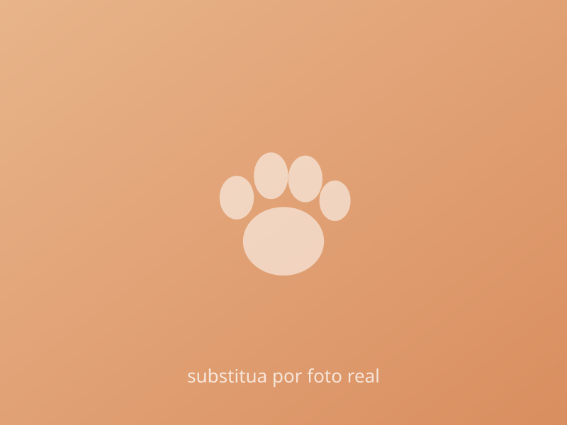

Adoção
Dê um lar a um resgatado
Conheça os cães e gatos que já estão vacinados, tratados e prontos para uma família. A gente acompanha a adaptação junto com você.
Ver quem espera um larResgatamos, cuidamos e encaminhamos cães e gatos abandonados para lares responsáveis. Adote, doe ou seja voluntário — existem muitas formas de mudar esta história.
As visitas aos animais acontecem aos sábados, com agendamento — fale com a gente pelo WhatsApp.
Escolha o caminho que fizer mais sentido para você — todos eles transformam vidas.

Adoção
Conheça os cães e gatos que já estão vacinados, tratados e prontos para uma família. A gente acompanha a adaptação junto com você.
Ver quem espera um larDoação
Sua doação vira ração, veterinário, medicação e castração. Chave Pix:
Voluntariado
Passeio, transporte, eventos, fotografia ou cuidados diários — toda ajuda é bem-vinda e faz diferença real.
Quero ser voluntárioEmpresas
Patrocínio de campanhas, vaquinhas solidárias, mutirões de castração e ações de engajamento com seu time.
Falar com a genteConheça parte dos nossos resgatados disponíveis para adoção.
Um processo simples, transparente e com acompanhamento — para o bem de todos.
Navegue pela vitrine e observe porte, energia e história — o perfil precisa combinar com a sua rotina.
Clique em “Quero adotar” para conversar por WhatsApp e preencher o formulário de interesse.
Conheça o animal pessoalmente e converse com nossa equipe sobre rotina, espaço e expectativas.
Leve seu novo amigo para casa. A gente continua por perto, acompanhando a adaptação.
Metas claras e impacto mensurável — acompanhe cada campanha de perto.
Dúvidas sobre adoção, doações ou parcerias? Estamos por aqui.